건설기계설비기사 (2004-03-07 기출문제)
1과목: 재료역학
1. 다음과 같이 양단을 고정한 길이 ℓ , 단면적 A의 막대를 ΔT 만큼 온도를 올렸을때 막대에 생기는 응력 σ는? (단, 막대의 탄성계수를 E, 선팽창 계수를 α라 한다.)
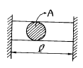
- σ = -Eα ΔT
- σ = -Eα2ΔTA
- σ = -EαΔTℓ
- σ = -EαΔTℓ 2
(정답률: 알수없음)

2. 3200 N.m의 비틀림모멘트를 받는 둥근축이 있다. 이 축의 허용 전단응력을 60 MPa이라 하면 축의 지름은 최소 몇 cm로 해야 하는가?
- 4.06
- 6.48
- 8.16
- 10.28
(정답률: 알수없음)
3. 길이 240cm, 단면의 폭x높이 = 12cmx15cm의 단순보가 ω kN/m의 균일분포하중을 받고 있다. 이보의 허용굽힘응력 σ a = 48 MPa일 때 허용할 수 있는 분포하중의 최대값은?
- 80
- 30
- 40
- 60
(정답률: 알수없음)
4. 단면적이 5 cm2, 길이가 60 cm인 연강봉을 천장에 매달고 20 ℃에서 0 ℃로 냉각시킬때 길이의 변화를 없게하려면 봉의 끝에 몇 kN의 추를 달아 주어야 하는가 ? (단, E=200 GPa, α =12x10-6/℃, 봉의 자중은 무시)
- 60
- 36
- 30
- 24
(정답률: 알수없음)
5. 최대 사용강도(σmax)=240 MPa, 직경 1.5 m, 두께 3 ㎜의 강재 원통형 용기가 견딜 수 있는 압력은 몇 kPa 인가?(단, 안전계수(Sf)는 2이다.)
- 240
- 480
- 960
- 1920
(정답률: 알수없음)
6. 다음 그림과 같이 균일분포 하중(ω)을 받는 고정지지보에서 최대 처짐 δ max는 얼마 정도인가 ? (단, ℓ 은 고정지지보의 길이, E는 탄성계수(N/m2) Ⅰ는 단면 2차모멘트(m4)이다.)
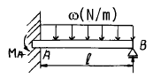
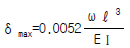
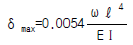
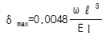
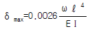
(정답률: 알수없음)
7. 그림과 같은 보의 지점 반력 RA, RB 는?
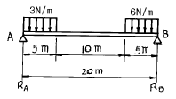
- RA = 9.4 N, RB = 35.6 N
- RA = 10.1 N, RB = 34.9 N
- RA = 15.4 N, RB = 29.6 N
- RA = 16.9 N, RB = 28.1 N
(정답률: 알수없음)
8. 한 점에서의 미소요소가 εx=340x10-6, εy=110x10-6, γxy=180x10-6 인 평면 변형률을 받을 때 이 점에서의 주 변형률은?
- 521x10-6
- 437x10-6
- 371x10-6
- 146x10-6
(정답률: 알수없음)
9. 아래 그림에서와 같이 단붙이 원형축(Stepped Circular Shaft)의 풀리에 토크가 작용하여 평형상태에 있다. 이 축에 발생하는 최대 전단응력은 몇 MPa 인가?
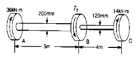
- 18.2
- 22.9
- 41.3
- 52.4
(정답률: 알수없음)
10. 외경이 내경의 1.5배인 중공축과 재질과 길이가 같고 지름이 중공축의 외경과 같은 중실축이 동일 회전수에 동일 마력을 전달한다면, 이때 중실축에 대한 중공축의 비틀림각의 비는 어느 것인가?
- 1.25
- 1.50
- 1.75
- 2.00
(정답률: 알수없음)
11. 그림과 같은 단주(短注)에서 편심 거리 e=2 mm에 하중 P=1 MN의 압축하중이 작용할 때 발생하는 최대응력은 몇 MPa인가?
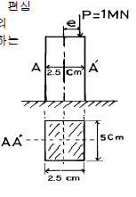
- 975
- 998
- 1027
- 1184
(정답률: 알수없음)
12. 그림과 같이 단면의 치수가 8 mm x 24 mm인 강대가 인장력 P = 15 kN을 받고 있다. 그림과 같이 30° 경사진면에 작용하는 전단응력은 몇 MPa 인가?
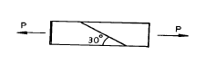
- 19.5
- 29.3
- 33.8
- 67.6
(정답률: 알수없음)
13. 한가지 재료(탄성계수 E)로 된 그림과 같은 원형 단면의 봉이 온도 t에서 to로 강하 되었을 때 ①의 부분과 ②의 부분의 응력의 비로 맞는 것은?(단, d1 = 1.41d2 이고, 선팽창 계수는 α 이다.)
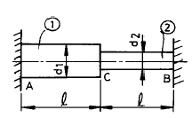
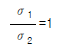
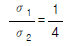
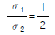
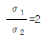
(정답률: 알수없음)
14. 직경 d인 원형단면의 원주에 접하는 축에 관한 단면 2차모멘트는?
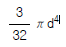
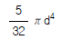
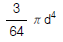
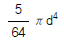
(정답률: 알수없음)
15. 양단이 단순지지된 길이 2m인 보에 균일분포 하중 w = 800 kN/m가 작용할 때 최대 처짐각은? (단, 보 단면의 관성모멘트는 I = 500x106 mm4이고, 탄성계수는 E = 200 GPa이다.)
- 0.034°
- 0.153°
- 0.278°
- 0.361°
(정답률: 알수없음)
16. 단면 20cm x 30cm, 길이 6m의 목재로된 단순보의 중앙에 20 kN의 집중하중의 작용할 때, 최대 처짐(δ max)은? (단, 탄성계수 E = 10 GPa 이다.)
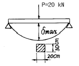
- 1.8㎝
- 2.0㎝
- 1.5㎝
- 2.4㎝
(정답률: 알수없음)
17. 탄성계수 E, 전단탄성계수 G, 프와송 비 μ사이의 관계식 중 옳은 것은?
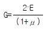
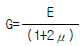
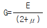
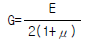
(정답률: 알수없음)
18. 동일재료로 만든 동일한 굽힘강도의 정사각형 단면보와 원형 단면보의 단면적비, 즉 정사각형 단면적/원형 단면적의 값은 얼마인가?
- 0.89
- 0.98
- 1.8
- 0.64
(정답률: 알수없음)
19. 재료가 축방향 하중을 받아 선형 탄성적으로 거동할 때 변형 에너지밀도(strain-energy density)를 구하는 식이 아닌 것은?(단, σ : 응력, ε: 변형률, E : 탄성계수)
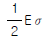
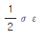
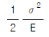
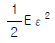
(정답률: 알수없음)
20. σx= 500 Pa, σy= 300 Pa, τxy= 100 Pa인 그림과 같은 요소내에 발생하는 최대 주응력의 크기는 몇 Pa 인가?
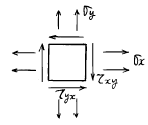
- 341
- 441
- 541
- 641
(정답률: 알수없음)
2과목: 기계열역학
21. 시스템의 열역학적 상태를 기술하는 데 열역학적 상태량(또는 성질)이 사용된다. 다음 중 열역학적 상태량으로 올바르게 짝지어진 것은?
- 열, 일
- 엔탈피, 엔트로피
- 열, 엔탈피
- 일, 엔트로피
(정답률: 알수없음)
22. 잘 단열된 축전지를 전압 12 V, 전류 3 A로 1시간 충전한다. 축전지를 시스템으로 삼아 1시간 동안 행한 일과 열을 구하면?
- 일 = 36.0 kJ, 열 = 0.0 kJ
- 일 = 0.0 kJ, 열 = 36.0 kJ
- 일 = 129.6 kJ, 열 = 0.0 kJ
- 일 = 0.0 kJ, 열 = 129.6 kJ
(정답률: 알수없음)
23. 다음 사항은 기계열역학에서 일과 열(熱)에 대한 설명이다. 이 중 틀린 것은?
- 일과 열은 전달되는 에너지이지 열역학적 성질은 아니다.
- 일의 기본단위는 J(joule)이다.
- 일(work)의 크기는 무게(힘)와 힘이 작용하는 거리를 곱한 값이다.
- 일과 열은 점함수이다.
(정답률: 알수없음)
24. 계의 경계를 통하여 물질이나 에너지 전달이 없는 계는 다음 어느 것인가?
- 밀폐계 (closed system)
- 고립계 (isolated system)
- 단열계 (adiabatic system)
- 개방계 (open system)
(정답률: 알수없음)
25. 다음 그림과 같은 증기압축 냉동 사이클에서 성능계수를 표시하는 식은? (단, h는 엔탈피, T는 절대온도, S는 엔트로피이다.)
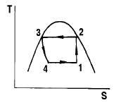
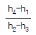
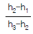
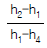
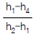
(정답률: 알수없음)
26. -4 ℃의 얼음 1kg을 18 ℃의 물로 만드는데 필요한 열량은 몇 kJ인가 ? (단, 물의 비열은 4 kJ/(kg℃), 얼음의 비열은 2 kJ/(kg℃), 얼음의 융해열은 340 kJ/kg이다.)
- 340
- 380
- 420
- 460
(정답률: 알수없음)
27. 카르노사이클로 작동되는 열기관이 600K에서 800 kJ의 열을 받아 300K에서 방출한다면 일은 몇 kJ인가?
- 200
- 400
- 500
- 900
(정답률: 알수없음)
28. 초기에 300 K, 150 kPa 인 공기 0.5 m3을 등온과정으로 600 kPa까지 천천히 압축하였다. 이 과정동안 일을 계산하면?
- -104 kJ
- -208 kJ
- -52 kJ
- -312 kJ
(정답률: 알수없음)
29. 다음중 이상기체의 정적비열(Cv)과 정압비열(Cp)에 관한 관계식 중 옳은 것은? (단, R은 일반기체상수)
- Cv - Cp = 0
- Cv + Cp = R
- Cp - Cv = R
- Cv - Cp = R
(정답률: 알수없음)
30. 분자량이 4 정도인 헬륨의 기체상수는 몇 kJ/㎏.K 에 해당하는가?
- 28
- 2.08
- 0.287
- 212
(정답률: 알수없음)
31. 다음 중 물질의 엔트로피가 증가한 경우는?
- 컵에 있는 물이 증발하였다.
- 목욕탕의 수증기가 차가운 타일 벽에 물로 응결 되었다.
- 실린더 안의 공기가 가역 단열적으로 팽창되었다.
- 뜨거운 커피가 식어서 주위온도와 같게 되었다.
(정답률: 알수없음)
32. 터빈을 통과 하는 증기가 한 일이 360kJ/kg이고, 증기의 유량이 200kg/h 일때 터빈의 출력은?
- 20 ㎾
- 2000 ㎾
- 3600 ㎾
- 72000 ㎾
(정답률: 알수없음)
33. 물의 증발 잠열은 101.325kPa에서 2257kJ/kg 이고, 비체적은 0.00104m3/kg에서 1.67m3/kg으로 변화한다. 이 증발 과정에 있어서 내부에너지의 변화량(kJ/kg)은?
- 237.5
- 2375
- 208.8
- 2088
(정답률: 알수없음)
34. 이상 오토사이클의 압축초기 공기는 100 kPa, 17℃ 이다. 등적과정에서 700 kJ/kg의 열을 받았다면 사이클의 최고 압력과 온도는 얼마인가? (단, 공기의 비열비 k = 1.4 이고, 정압비열 cp = 1003 J/kg 이다. 이상 오토사이클의 압축비는 8이다.)
- 4.21 MPa, 1752 K
- 1.84 MPa, 666.6 K
- 4.53 MPa, 666.6 K
- 4.53 MPa, 1643 K
(정답률: 알수없음)
35. 증기 터빈에서의 상태 변화 중 가장 이상적인 과정은?
- 가역 정압 과정
- 가역 단열 과정
- 가역 정적 과정
- 가역 등온 과정
(정답률: 알수없음)
36. 가정용 냉장고를 이용하여 겨울에 난방을 할 수 있다고 주장하였다면 이 주장은 이론적으로 열역학법칙과 어떠한 관계를 갖겠는가?
- 열역학 1법칙에 위배된다.
- 열역학 2법칙에 위배된다.
- 열역학 1, 2법칙에 위배된다.
- 열역학 1, 2법칙에 위배되지 않는다.
(정답률: 알수없음)
37. 압축기에 의한 공기의 압축과정을 PVn=일정인 과정으로 볼 때 소요동력이 가장 작은 것은?
- n=1
- n=1.2
- n=1.4
- n=1.6
(정답률: 알수없음)
38. 초기온도와 압력이 50℃, 600kPa인 단위 중량의 질소가 100kPa까지 가역 단열팽창 하였다. 이 때 온도는 몇 K 인가? (단, 비열비 k=1.4 이다.)
- 194
- 294
- 467
- 539
(정답률: 알수없음)
39. 발전소 계통에 대해 맞는 말은?
- 펌프 일은 터빈 일에 비해 약간 작다.
- 원자력 발전소에서 증기동력 사이클은 1차계통으로 부른다.
- 발전소는 바다와 강가에 위치한다고 경제성이 좋다고 볼 수 없다.
- 터빈 출구 건도가 1보다 작으면 터빈을 손상시킬 수있다.
(정답률: 알수없음)
40. 카르노 사이클로 작동되는 기관이 고온체에서 100kJ의 열을 받아들인다. 이 기관의 열효율이 30%라면 방출되는 열량(kJ)은?
- 30
- 50
- 60
- 70
(정답률: 알수없음)
3과목: 기계유체역학
41. 길이가 5 mm이고 발사속도가 400m/s인 탄환의 항력을 10배 큰 모형을 사용하여 물속에서 측정하려고 한다. 실형과 모형사이에 역학적 상사가 성립하면 실험실에서 측정한 모형의 항력이 10 N이라면 실제 탄환에 작용하는 항력은 몇 N 인가?(단, 공기의 점성계수는 2x10-5 kg/(m· s), 밀도는 1.2kg/m3, 물의 점성계수는 0.001 kg/(m· s)라고 한다)
- 1/3
- 1
- 3.33
- 33.3
(정답률: 알수없음)
42. 다음 중 포텐셜 유동에 대한 설명으로 옳지 않은 것은?
- 포텐셜 유동에서는 점성저항이 없다.
- 유동(유선)함수가 존재하는 유동은 포텐셜유동이다.
- 포텐셜 유동은 비회전 유동이다.
- 포텐셜 유동에서는 같은 유선 상에 있지 않은 두 곳에서도 베르누이방정식이 성립한다.
(정답률: 알수없음)
43. 그림에서 마찰을 무시하고, 날개가 제트의 방향을 180° 바꾼다고 했을 때 제트에 의해서 날개에 작용하는 힘의 크기는 몇 N인가?
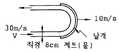
- 2010
- 4020
- 8040
- 6200
(정답률: 알수없음)
44. 액체 속에 잠겨 있는 곡면(AB)에 작용하는 힘의 수평분력은?
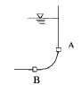
- 곡면의 수직 상방에 있는 액체의 무게와 같다.
- 곡면에 의하여 유지된 액체의 무게와 같다.
- 곡면을 수직평면에 투영시킨 면에 작용하는 힘과 같다.
- 곡면을 수평평면에 투영시킨 면에 작용하는 힘과 같다.
(정답률: 알수없음)
45. 수면의 높이가 지면에서 h인 물통벽에 구멍을 뚫고 지면에 분출시킬 때 지면을 기준으로 구멍을 어디에 뚫어야 가장 멀리 떨어질 것인가?
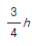
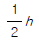
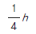
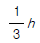
(정답률: 알수없음)
46. 비중 0.9, 점성계수 5 x 10-3 N.s/m2 의 기름이 안지름 15㎝ 의 원형관 속을 0.6 m/s의 속도로 흐를 경우 레이놀즈수는 약 얼마인가?
- 16200
- 2755
- 1651
- 3120
(정답률: 알수없음)
47. 길이 100m인 배가 10m/s의 속도로 항해한다. 길이 2m인 모형배를 만들어 조파저항을 측정한 후 원형배의 조파저항을 구하고자 동일한 조건의 해수에서 실험을 하고자 한다. 모형배의 속도를 몇 m/s 로 하면 되겠는가?
- 500
- 70.7
- 0.2
- 1.41
(정답률: 알수없음)
48. 그림과 같은 U자관 차압마노미터가 있다. 비중 S1=0.9, S2=13.6, S3=1.2이고 h1=10 cm, h2=30 cm, h3=20 cm일 때 PA - PB는 얼마인가?
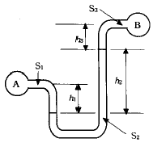
- 41.5 kPa
- 28.8 kPa
- 41.5 Pa
- 28.8 Pa
(정답률: 알수없음)
49. 그림과 같이 피토 정압관이 설치된 원관 속을 흐르는 공기의 유량은 몇 m3/s 인가?(단, 공기는 비압축성, 이상유체로 가정하며, 밀도는 1.2 kg/m3이다.)
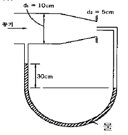
- 0.02
- 0.2
- 0.55
- 1.25
(정답률: 알수없음)
50. 20℃의 물이 지름 2㎝의 원관속을 흐르고 있다. 층류로 흐를 수 있는 최대 평균속도는 몇 m/s 인가?(단, 임계 레이놀즈수는 2100 이며 20 ℃ 물의 동점성계수는 1.0⑤x10-6 m2/s이다.)
- 24.5
- 10.5
- 2.45
- 0.1⑤
(정답률: 알수없음)
51. 원관 내 완전히 발달된 난류 속도분포
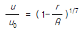
[R : 반지름] 에 대한 단면 평균속도는 중심속도 u0 의 몇 배인가?- 0.5
- 0.571
- 0.667
- 0.817
(정답률: 알수없음)
52. 정상, 균일 유동속에 유동 방향과 평행하게 놓여진 평판 위에 발생하는 층류 경계층의 두께 δ 는 x를 평판선단으로 부터의 거리라 할 때 다음 어느 값에 비례하는가?
- x1/2
- x1/3
- x1/5
- x-1/2
(정답률: 알수없음)
53. 이상기체를 등온 압축시킬 때 체적탄성계수는 ? (단, P는 압력, k는 비열비이다.)
- P
- kP
- k/P
- 1/P
(정답률: 알수없음)
54. 흐르는 물의 속도가 1.4 m/s일 때 속도 수두는?
- 0.2m
- 10m
- 0.1m
- 1m
(정답률: 알수없음)
55. 유동의 박리(separation)에 대한 설명중 틀린 것은?
- 급 확대관에서 생기기 쉽다.
- 압력이 유동방향으로 감소할 때 생긴다.
- 박리점에서의 전단응력은 영이다.
- 박리현상은 손실을 유발한다.
(정답률: 알수없음)
56. 출력이 450kW인 터빈을 통과하는 물이 초당 0.6m3이다. 이 때 터빈의 수두는 약 몇 m인가 ? (단, 터빈의 효율은 87%이다.)
- 88
- 78
- 1
- 11
(정답률: 알수없음)
57. 표준 대기압하에서 온도 20℃인 건조공기의 점성계수는 1.845x10-55 N.s/m2이다. 동점성 계수(m2/s)는 ? (단, 공기의 밀도는 1.23 kg/m3이다.)
- 1.5x10-3
- 1.5x10-4
- 1.5x10-5
- 1.5x10-6
(정답률: 알수없음)
58. 안지름 0.1 m인 파이프 내를 평균 유속 5 m/s로 어떤 액체가 흐르고 있다. 길이 100 m 사이의 손실수두는 몇 m인가? (단, 관 내의 흐름으로 레이놀즈수는 1000 이다.)
- 81.6
- 40
- 16.32
- 50
(정답률: 알수없음)
59. 다음 중 음속 a를 구하는 식이 아닌 것은?(단, P:절대압력, ρ:밀도, T:절대온도, R:기체상수, E:체적탄성계수, k:비열비, g:중력가속도, ν:동성점계수)
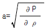
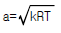
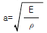
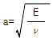
(정답률: 알수없음)
60. 공기 중에서 무게가 900N 인 돌이 물에 잠겨 있다. 물속에서의 무게가 400N 이라면, 이 돌의 체적과 비중은 각각 얼마인가? (단, 물의 밀도는 1000 kg/m3 이다.)
- 0.⑤1 m3, 1.8
- 0.51 m3, 1.8
- 0.⑤1 m3, 3.6
- 0.51 m3, 3.6
(정답률: 알수없음)
4과목: 유체기계 및 유압기기
61. 연료분사식 가솔린기관이 기화기를 사용하는 기관보다 체적효율이 증가하는 이유가 아닌 것은?
- 벤츄리부에서의 압력강하가 커서 연료의 미립화가 촉진하게 된다.
- 기화기를 사용하는 경우보다 흡기통로의 저항이 적다
- 흡기관 내의 압력변화가 공기연료에 영향을 주지 못한다.
- 흡기계의 유효길이가 짧게되므로 고속영역에서 관성 효과의 이용이 가능하다.
(정답률: 알수없음)
62. 출력이 7.5[㎾], 회전수 1400[rpm]인 유압 모터의 토크는 몇 [kgf· m]인가?
- 약 2.4
- 약 4.3
- 약 5.2
- 약 6.1
(정답률: 알수없음)
63. 오일 분배장치에는 비산식과 가압식이 있는데 비산식이 가압식 보다 유리한 점은?
- 오일 소비가 적다.
- 급유량을 조절할 수 있다.
- 구조가 간단하고, 값이 싸다.
- 기관 전체를 윤활 시킨다.
(정답률: 알수없음)
64. 다음 중 유체의 점성 계수(μ)에 정비례하는 운동은?
- 층류 운동
- 마찰 운동
- 점성 운동
- 무차원 운동
(정답률: 알수없음)
65. 보기와 같은 유압회로의 명칭으로 가장 적합한 것은?
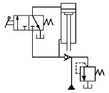
- 감속회로
- 감압회로
- 언로드 회로
- 로크 회로
(정답률: 알수없음)
66. 어큐뮬레이터(accumulator)의 용도가 아닌 것은?
- 불순물 여과
- 유압펌프의 맥동제거
- 충격압력 흡수
- 에너지 축적용
(정답률: 알수없음)
67. 일반적으로 유압 펌프의 크기(용량)는 무엇으로 결정하는 가?
- 속도와 무게
- 압력과 속도
- 압력과 토출량
- 토출량과 속도
(정답률: 알수없음)
68. 수냉식 기관의 방열기가 있다. 방열기 입구의 수온이 85℃이고, 출구의 온도가 75℃이며, 통과하는 공기의 전후 온도는 각각 28℃, 32℃이다. 방열기의 열통과율이 500 kcal/m2.h.℃이고, 방열기의 전 유효방열면적이 2m2라면 제거되는 열은 얼마인가?
- 25,000kcal/h
- 50,000kcal/h
- 100,000kcal/h
- 12,500kcal/h
(정답률: 알수없음)
69. 가스터빈사이클의 가장 기본이 되는 열역학적 사이클은?(오류 신고가 접수된 문제입니다. 반드시 정답과 해설을 확인하시기 바랍니다.)
- 랭킨 사이클
- 2중 연소사이클
- 브레이톤 사이클
- 사바테 사이클
(정답률: 알수없음)
70. 유압 시스템에서 실린더가 불규칙적으로 작동되고 있을 때, 그 주요 원인이 아닌 것은?
- 밸브의 작동 불량
- 펌프의 성능 불량
- 과부하 작동
- 작동유 과다
(정답률: 알수없음)
71. 두개 이상의 분기회로에서 실린더나 모터의 작동 순서를 부여해 주는 밸브는?(오류 신고가 접수된 문제입니다. 반드시 정답과 해설을 확인하시기 바랍니다.)
- 체크 밸브
- 셔틀 밸브
- 스로틀 밸브
- 시퀀스 밸브
(정답률: 알수없음)
72. 기화기에서 공기 온도가 저하되면 공기속의 수증기 때문에 빙결(icing-up)이 생기는데 빙결이 일어나기 가장 쉬운 곳은?
- 초크밸브의 직전 부근
- 초크밸브의 직후 부근
- 스로틀밸브의 직전 부근
- 스로틀밸브의 직후 부근
(정답률: 알수없음)
73. 다음 중 내연기관 연료의 구비조건을 설명한 것으로 잘못된 것은?
- 기화성이 좋고 적당한 점도를 가질 것
- 인화점이 낮고 내폭성이 클 것
- 스파크 점화기관의 연료는 착화점이 낮을 것
- 발열량이 크고 연소성이 좋을 것
(정답률: 알수없음)
74. 무과급 고속기관에서 가장 높은 평균 유효 압력을 얻을 수 있는 연소실 형식은?
- 직접분사식
- 예연소실식
- 와류실식
- 공기실식
(정답률: 알수없음)
75. 유량제어 밸브를 실린더의 출구쪽에 설치해서 귀환유의 유량을 제어함으로서 실린더 속도를 제어하는 회로는?
- 미터 아웃 회로
- 블리드 오프 회로
- 차동 회로
- 카운터밸런스 회로
(정답률: 알수없음)
76. 유압펌프 토출압력이 60kgf/cm2, 토출유량은 30 ℓ / min인 경우 펌프의 동력은 약 몇 kW 인가?(오류 신고가 접수된 문제입니다. 반드시 정답과 해설을 확인하시기 바랍니다.)
- 0.294
- 2.94
- 29.4
- 294
(정답률: 알수없음)
77. 디젤기관에서 연료가 분사되기 시작하여 연소가 시작될 때까지의 기간을 무엇이라 부르는가?
- 착화지연기간
- 화염전파기간
- 직접연소기간
- 후기연소기간
(정답률: 알수없음)
78. 유압 작동유의 점도가 높을 경우 유압장치에 미치는 영향 설명으로 올바른 것은?
- 유압펌프에서 캐비테이션이 잘 발생되지 않는다.
- 유압펌프의 동력 손실이 감소하여 기계효율이 높아진다.
- 유동에 따르는 압력손실이 증가한다.
- 제어밸브나 실린더의 응답성이 좋아 진다.
(정답률: 알수없음)
79. 내연기관에 있어서 기관회전수를 N(rpm), 직경을 D(mm), 행정 S(m), 회전력을 T(kgf.m)라 할 때 피스톤의 평균속도(m/s)는 어떻게 표현되는가?
- 2NS/60
- 2DS/60
- π NS/60
- π DS/60
(정답률: 알수없음)
80. 단기통 4행정 기관의 실린더 안지름이 85mm , 행정(stroke)이 85mm, 압축비가 4.8인 기관의 연소실 체적은 몇 cm3인가?
- 482.33
- 314.59
- 255.44
- 126.84
(정답률: 알수없음)
5과목: 건설기계일반 및 플랜트배관
81. 불도우저 작업에서 나무 뿌리의 제거나 흙속의 돌을 골라 내는 데 주로 사용되는 도우저는?
- 앵글 도우저 (angle dozer)
- u - 도우저 (u - dozer)
- 스트레이트 도우저 (straight dozer)
- 레이크 도우저 (rake dozer)
(정답률: 알수없음)
82. 구멍의 내면을 가장 정밀하게 가공하는 방법은?
- 드릴링(Drilling)
- 보링 (Boring)
- 리밍(Reaming)
- 호우닝 (Honing)
(정답률: 알수없음)
83. 인벌류우트 곡선을 그리는 원리를 이용하여 기어를 절삭 하는 가공방법은?
- 랙커터에 의한 방법
- 형판에 의한 방법
- 총형커터에 의한 방법
- 창성법
(정답률: 알수없음)
84. 기중기의 권상, 권하 조작에 필요한 안전장치와 직접 관련이 없는 것은?
- 제한 스위치
- 인터록 장치
- 클러치
- 기계 브레이크
(정답률: 알수없음)
85. 다음 중 도로 포장용 기계에 해당되지 않는 것은?
- 아스팔트 플랜트
- 다짐용 기계
- 콘크리트 스프레더
- 호이스팅 머신
(정답률: 알수없음)
86. 열처리에서 순철의 A2변태는?
- δ ⇆ γ의 변태점
- α 고용체의 자기 변태점
- α 고용체에 대한 탄소의 최대 고용도를 갖는점
- γ 고용체로 부터 α 고용체를 석출하는 점
(정답률: 알수없음)
87. 스크레이퍼 작업에서 고려할 필요가 없는 것은?
- 적재속도. 운반속도
- 회행속도, 삭토거리
- 기어변환시간, 보울의 용량
- 압토거리, 붐
(정답률: 알수없음)
88. 다음 탭에 관한 설명 중에서 옳은 것은?
- 1/16 테이퍼의 파이프탭은 기밀을 필요로 하는 부분에 태핑을 하는 데 쓰인다.
- 핸드탭등경 1번탭으로 나사를 깎을 때에는 탭구멍 입구에 모떼기 할 필요가 없다.
- 핸드탭등경 1번탭은 약간에 테이퍼를 주어 탭구멍에 잘 들어가게 하며 이 테이퍼부는 절삭을 하지 않고 나사부의 안내가 된다.
- 탭의 드릴 사이즈 d는 나사의 호칭 지름을 D, 피치를 p라고 하면 d = D -3p로 계산된다.
(정답률: 알수없음)
89. 모우터 그레이더의 회전반경을 작게하기 위해서 앞바퀴를 좌우로 기울이게 하는 장치는?(오류 신고가 접수된 문제입니다. 반드시 정답과 해설을 확인하시기 바랍니다.)
- 리이닝 장치
- 아티큘레이트 장치
- 스케어리 파이어
- 파워 콘트롤 장치
(정답률: 알수없음)
90. 공작물의 절삭속도(V)를 구하는 올바른 공식은 ? (단, d : 공작물의지름(m), n : 공작물의 회전수(r.p.m), V : 절삭속도(m/min)라 한다.)
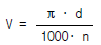
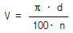
- V = π · d· n
- V = 2(π · d· n)
(정답률: 알수없음)
91. 프레스를 이용한 단조에서 유효 단조 면적이 150㎝2, 가 공재료의 변형저항이 20kg/㎜2, 기계효율을 80%로 하면 프레스의 용량은?
- 3750 ㎏
- 37500 ㎏
- 24 ton
- 375 ton
(정답률: 알수없음)
92. 모재를 (+)극에, 용접봉을 (-)극에 연결하는 용접법은?
- 정극성
- 역극성
- 비용극성
- 용극성
(정답률: 알수없음)
93. 덤프트럭(dump truck)의 동력전달계(power train)와 관계가 없는 것은?
- 클러치(clutch)
- 트란스미션(transmission)
- 기화기(carbureter)
- 차동치차장치(differential gear)
(정답률: 알수없음)
94. 건설 기계 중 규격표시 방법에 있어서 틀린 것은?
- 덤프트럭은 최대 적재중량(t)으로 표시한다.
- 지게차는 최대 들어올림용량(t)으로 표시한다.
- 불도우저는 표준 배토판의 길이(m)로 표시한다.
- 로우더는 표준 버킷의 산적용량(m3)으로 표시한다.
(정답률: 알수없음)
95. 블록게이지의 특징 중 틀린 것은?
- 측정면이 서로 밀착하는 특성을 가지고 있으나, 몇 개의 수로 많은 치수기준을 얻을 수 없다.
- 표시하는 길이의 정밀도가 매우 높다.
- 손쉽게 사용할 수 있다.
- 광파장으로부터 직접 길이를 측정할 수 있다.
(정답률: 알수없음)
96. 로터리 공기 압축기의 장점이 아닌 것은?
- 왕복동식에 비하여 경량급이다.
- 출력조절이 쉽고, 내구성이 크다.
- 공기량이 비교적 균일하다.
- 구조가 비교적 간단하다.
(정답률: 알수없음)
97. 금속재료에 처음 한 방향으로 하중을 가하고, 다음에 반대 방향으로 하중을 가하였을 때, 전자보다는 후자의 경우가 비례한도가 저하한다. 이 현상은?
- 크리프 현상
- 바우싱거 효과
- 피로 현상
- 탄성파손 효과
(정답률: 알수없음)
98. 쇄석기에 관한 설명으로 틀린 것은?
- 선 별 기 - 파쇄된 골재를 크기별로 골라내는 장치
- 피 이 더 - 원석을 일정비율로 연속적으로 공급하는 장치
- 벨트의 길이 - 컨베이어 양단에 있는 로울러 중심간의 거리
- 표준생산능력 - 분(分)당 생산할 수 있는 골재의 종류
(정답률: 알수없음)
99. 숫돌의 색이 녹색이며 초경 합금의 연삭에 사용하는 것은?
- D 숫돌
- A 숫돌
- WA 숫돌
- GC 숫돌
(정답률: 알수없음)
100. 로드롤러(road roller)의 동력전달 방식에 대한 설명으로 옳은 것은?
- 기관-변속기-주클러치-전후진기어-구동바퀴
- 기관-주클러치-변속기-전후진기어-구동바퀴
- 기관-변속기-주클러치-유체커플링-구동바퀴
- 기관-주클러치-변속기-유체커플링-구동바퀴
(정답률: 알수없음)